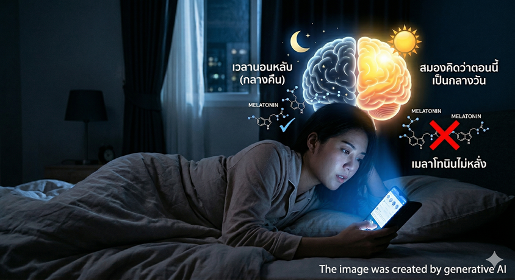

เคยไหมครับ... นอนบนเตียง ก็ง่วงแล้วแหละ แต่พอหลับตาปุ๊บ มันไม่หลับ
พลิกซ้าย พลิกขวา ผ่านไป 1–2 ชั่วโมง ยังไม่หลับ ทั้งที่พรุ่งนี้ต้องตื่นตี 6
ผมจะเล่าให้ฟังว่า ทำไมมันเป็นแบบนี้ แล้วทำไม แค่เปลี่ยนแว่นที่ใส่ตอนค่ำ ถึงแก้ปัญหานี้ได้จริง

ย้อนไป 200,000 ปีก่อน — มนุษย์ไม่มีปัญหานอนไม่หลับ
เรื่องนี้ต้องเล่าตั้งแต่ต้นเลย คือมนุษย์เรานะครับ ถูกออกแบบมาให้นอนตามพระอาทิตย์
พระอาทิตย์ขึ้น — ตื่น พระอาทิตย์ตก — ง่วง จบ ง่ายมาก ร่างกายมีระบบอัตโนมัติที่ทำแบบนี้มา 200,000 ปี

ดู TikTok ดู YouTube อ่านข่าว ไถ feed — ปกติมาก ทุกคนทำ
หน้าจอปล่อยแสงสีน้ำเงินตรงเข้าตา สมองเลยคิดว่า "เอ๊ะ ยังกลางวันอยู่นี่?" แล้วก็สั่งหยุดผลิตเมลาโทนิน — ฮอร์โมนง่วงนอน — ทันที
ไม่ง่วง → หลับไม่ลง → หลับไม่ลึก → ตื่นมาเหมือนไม่ได้นอน
เมลาโทนิน — ตัวร้ายที่หายไป
ทีนี้ ตัวละครสำคัญของเรื่องนี้ชื่อ เมลาโทนิน ครับ คือ ฮอร์โมนง่วงนอน ที่สมองจะผลิตออกมาเมื่อรู้สึกว่า "มืดแล้ว"
ปัญหาอยู่ตรงนี้ — แสงสีน้ำเงินกับแสงสีเขียวจากจอโทรศัพท์ มันไปกดเมลาโทนินตรงๆ เลย สมองเลยไม่ผลิตฮอร์โมนง่วงนอนออกมา แม้จะ 4 ทุ่ม 5 ทุ่ม ตี 1 ตี 2 ก็ไม่ง่วง
= บอกสมองว่ายังกลางวัน
ฮอร์โมนง่วงนอนเลยไม่มา

Brainard et al. พบว่าแสงช่วง 446–477 nm (สีน้ำเงิน) คือตัวกดเมลาโทนินแรงที่สุด แรงกว่าสีอื่นทุกสี
— Brainard et al., Journal of Neuroscience, 2001อ่านมือถือ 90 นาทีก่อนนอน → เมลาโทนินยังต่ำจนถึงเวลาเข้านอน โดยเฉพาะคนอายุ 40+ ที่ฟื้นตัวช้ากว่าวัยรุ่น
— Schmid et al., Brain Communications, Oxford, 2024จุดนี้สำคัญมาก — สมาร์ทโฟนรุ่นใหม่ปล่อยแสงสีเขียวออกมาด้วย ซึ่งกดเมลาโทนินได้อีก 15–36% แปลว่าตัดแค่สีน้ำเงินยังไม่พอ
— Woelders et al., Current Biology, 2018แล้วทำไงดี? คำตอบอยู่ที่ "สีเลนส์"
ทีนี้คำถามที่ทุกคนจะถามคือ "เฮ้ย แว่นกรองแสงสีเหลืองๆ ที่ขายทั่วไป ช่วยได้ไหม?" คำตอบคือ... แทบไม่ช่วยครับ
งานวิจัยเทียบให้ดูชัดๆ เลย ว่าเลนส์แต่ละสีตัดแสงได้ต่างกันมาก:
ไม่ต้องวางมือถือ ไม่ต้องกินยา ไม่ต้องเปลี่ยนอะไร

เทียบกันชัดๆ — เลนส์สีไหนตัดแสงได้มากกว่า?
นักวิจัยใช้ค่า mDFD วัดตรงๆ ว่าเลนส์สีไหนช่วยได้จริง ดูครับ:
(Yellow/Clear)
(Amber)
(Orange/Red)
ใส่เลนส์ Amber 3 ชม. ก่อนนอน 2 สัปดาห์ → คุณภาพการนอนดีขึ้นชัดเจน เมื่อเทียบกับเลนส์สีเหลืองที่ตัดแค่ UV ยืนยันว่าต้องตัดสีน้ำเงินตรงๆ ถึงจะได้ผล
— Burkhart & Phelps, Chronobiology International, 2009เลนส์ 2 รุ่น — เลือกตามชีวิตจริงของคุณ
เราทำเลนส์มา 2 แบบครับ เลือกจากว่า "หลังทุ่มคุณยังต้องทำอะไร?"

ใส่ Max Sleep แล้วเล่นมือถือได้เลยนะ
หลายคนถามว่า "ต้องวางโทรศัพท์ด้วยไหม?" ไม่ต้องครับ! ใส่แว่น Max Sleep แล้วเล่นโทรศัพท์ตามปกติเลย นั่นแหละวิธีใช้ที่ถูกต้อง
เทียบเลนส์ 4 แบบ — ตัดแสงได้ต่างกันแค่ไหน?
หลักการง่ายมาก: แสงผ่านเข้าตาน้อย = เมลาโทนินเยอะ = หลับง่ายขึ้น
ราคา — ไม่ได้แพงอย่างที่คิด
เลนส์ใช้ Shamir RX คุณภาพสูง ย้อมสีเฉพาะสั่งทำทีละคู่ที่ร้าน ไม่ใช่เลนส์สีสำเร็จรูปนะครับ
สายตา ±5.00 หรือน้อยกว่า
สายตา ±6.00 หรือมากกว่า
อายุ 40+ สายตายาว? ก็ย้อมได้ครับ
สำหรับคนที่ต้องใช้แว่นอ่านหนังสือหรือทำงานหน้าจอ เราย้อมสี Max Sleep / Max Evening ลงบนเลนส์ Shamir Computer / Workspace ได้เลย มองจอชัด อ่านหนังสือได้ แล้วก็ช่วยเรื่องนอนไปในตัว
Computer — โซนมองใกล้กว้าง เหมาะคนทำงานหน้าจอตลอดวัน ระยะ 40–100 ซม.
Workspace — โซนกว้างขึ้น ครอบคลุมทั้งจอ โต๊ะ และระยะห้องประชุม ระยะ 40–400 ซม.
ราคาเลนส์สายตายาว (Computer/Workspace) + ย้อมสี
Add +0.75 ถึง +3.50
Add +0.75 ถึง +3.50
พูดตรงๆ — ไม่ใช่ทุกคนที่ใส่แล้วสบายทันที
ต้องบอกก่อนนะครับ ช่วงแรกที่ใส่ บางคนอาจรู้สึก ตึงตา สีเพี้ยน หรือมึนๆ ช่วง 3–7 วันแรก นี่ปกติ เพราะสมองกำลังปรับตัวกับสีใหม่
เมื่อสวมเลนส์สีส้ม/อำพัน สมองส่วนประมวลผลสี (Visual Cortex) จะได้รับ input ที่ต่างจากปกติ งานวิจัยจาก PMC (2023) พบว่าเลนส์ Yellow/Orange เปลี่ยน Color Vision และ Contrast Sensitivity อย่างมีนัยสำคัญในช่วง 7–14 วันแรก หลังจากนั้น สมองจะ adapt และความไม่สบายตาลดลงเอง
เลนส์ที่ย้อมสีเข้มเกินไป หรือย้อมไม่สม่ำเสมอ อาจทำให้เกิด ขอบสีรบกวน (Chromatic Fringing) บริเวณขอบวัตถุ โดยเฉพาะในผู้ที่มีค่าสายตาสูง หรือ Astigmatism สูง ทำให้รู้สึกภาพเบลอเล็กน้อย หรือปวดตาได้
ในกลุ่มที่มี ไมเกรน, Visual Stress, หรือ Photophobia งานวิจัยจาก Harvard และ University of Utah พบว่า แสงสีแดง-ส้ม-อำพัน สามารถกระตุ้น ipRGC ในระดับต่างกันต่อบุคคล บางคนรู้สึกสบายขึ้น แต่บางคนรู้สึกแย่ลงกับสีเฉพาะ แสงสีเขียวเท่านั้นที่พิสูจน์แล้วว่าสงบประสาทได้ในกลุ่มไมเกรน
- มีประวัติไมเกรนที่กระตุ้นด้วยแสงสี
- มี Photophobia รุนแรง
- มี Astigmatism สูงมาก (Cyl สูงกว่า -3.00)
- มีปัญหา Color Deficiency (ตาบอดสี)
- ใส่แว่นครั้งแรก ปวดหัวเล็กน้อยช่วง 3–7 วันแรก
- รู้สึกสีเพี้ยน มองเห็นทุกอย่างโทนส้ม
- ตาล้าหลังใส่นานกว่า 3 ชั่วโมง
- ใส่แล้วรู้สึกสีแยกยากในตอนกลางคืน
- ใช้โทรศัพท์/จอคอมก่อนนอนเป็นประจำ
- นอนหลับยาก หรือนอนไม่หลับเรื้อรัง
- ไม่มีประวัติไมเกรนจากแสงสี
- ต้องการ Deep Sleep ดีขึ้น ไม่ต้องพึ่งยา
- อยู่ในสภาพแวดล้อมไฟสว่างหลังทุ่ม
- มีไมเกรนหรือแพ้แสงรุนแรง
- มีปัญหาการมองเห็นสีผิดปกติ
- ต้องการความแม่นยำสีในงาน (ออกแบบ/ศิลปะ)
- มีโรคทางตาที่ยังไม่ได้รับการรักษา
- เคยปวดหัวจากการใส่แว่นสีมาก่อน
Ploychompoo Parsuraphun (Optometrist) ยินดีให้คำปรึกษาก่อนสั่งทำเลนส์ทุกเคส เพื่อให้แน่ใจว่าเลนส์ที่คุณได้รับ เหมาะกับสภาพตาและไลฟ์สไตล์จริงๆ ไม่ใช่แค่ตามกระแส
สรุปเทียบกันชัดๆ ครับ
👈 เลื่อนดูได้บนมือถือ
| ประเภท | ช่วงเวลาใส่ | กรอง/ตัดแสงสีน้ำเงิน | ตัดแสงสีเขียว | เหมาะสำหรับ |
|---|---|---|---|---|
| เลนส์กรองแสงทั่วไป (Clear) | กลางวัน | ~30–50% | ❌ | คนแพ้แสง, ทำงานหน้าจอกลางวัน |
| เลนส์สีเหลือง (Yellow) | กลางวัน | ~70% | ❌ | นักเกมเมอร์ตอนกลางวัน ⚠ ง่วงกลางวัน |
| Max Evening Lenses (Amber) | หลังพระอาทิตย์ตก | ✅ 100% | ❌ | ดูทีวี, ทำงาน ยังคมชัด ✓ แนะนำ |
| Max Sleep Lenses (MSL) | 2–3 ชม. ก่อนนอน | ✅ 100% | ✅ 100% | นอนไม่หลับ, ต้องการ Deep Sleep ✓ แนะนำสูงสุด |
"หลักการง่ายมากค่ะ แสงที่ผ่านเลนส์เข้าตาไม่มีน้ำเงิน ไม่มีเขียวอีกแล้ว สมองเลยเข้าใจว่ากลางคืนแล้ว แล้วก็เปิดให้ร่างกายผลิตเมลาโทนินได้เองตามธรรมชาติค่ะ"
เคล็ดลับฟรี — เปิด Dark Mode ด้วย
ทำได้เลยตอนนี้เลยครับ เปิด Dark Mode บนมือถือ — พื้นหลังสีดำ ตัวอักษรสีขาว มีงานวิจัยยืนยันว่าช่วยลดการกดเมลาโทนินได้จริง
Algebrahim et al. วัด Melatonin Suppression Value (MSV) จากสมาร์ทโฟน 64 รุ่น พบว่า Night Mode ที่ตั้งค่าอุณหภูมิสีอุ่นที่สุด (warmest setting) ลด MSV ได้สูงถึง 93% เมื่อเทียบกับหน้าจอปกติ — ยืนยันว่าการลด brightness และเปลี่ยนสีหน้าจอให้เข้มขึ้น ส่งผลโดยตรงต่อระดับ Melatonin ในร่างกาย
— Algebrahim et al., Optometry and Vision Science, 2020 (PubMed: 32168244)| โหมดหน้าจอ | ความสว่าง (Luminance) | Blue Light ที่ผ่านเข้าตา | ผลต่อ Melatonin | เหมาะช่วงเวลา |
|---|---|---|---|---|
| ⬜ White Mode (ปกติ) | สูง (200–400 cd/m²) | มาก | กด Melatonin อย่างรุนแรง | กลางวันเท่านั้น |
| 🌙 Night Mode (สีเหลือง) | ลดลง (~30–50%) | ลดลงบางส่วน | ลด MSV ได้ 93% (warmest) แต่ยังมีสีน้ำเงินหลงเหลือ | กลางคืน — ดีกว่าไม่ทำ |
| ⬛ Dark Mode + Brightness ต่ำ | ต่ำมาก (10–50 cd/m²) | น้อยมาก | กด Melatonin น้อยที่สุด ให้ Melatonin ขึ้นได้ตามปกติ |
✅ แนะนำก่อนนอน |
| 🔴 Dark Mode + เลนส์ Max Sleep | ต่ำมาก + Blue/Green ถูกตัด 100% | ศูนย์ (ไม่มีเลย) | 🏆 ประสิทธิภาพสูงสุด สมองคิดว่าอยู่ในห้องมืดสนิท |
✅✅ ดีที่สุด |
Settings → Display → Dark Mode
ลด Blue Light จาก background ได้ทันที
ลด Brightness < 30% — ยิ่งมืดยิ่งดี งานวิจัยพบว่า ระดับแสงส่งผลมากกว่าสี
เพิ่มความอุ่นของหน้าจอ (Color Temperature) ลด Blue Peak ลงอีก
ทำทุกข้อข้างต้นแล้ว + ใส่เลนส์สีแดงเข้ม = ตัดแสงสีน้ำเงิน+เขียวได้ 100% สมองเข้าใจว่าเป็นกลางคืนแน่นอน
งานวิจัยทั้งหมดที่อ้างอิง
รวมไว้ให้ครบครับ ใครอยากอ่านเพิ่มเติมกดไปได้เลย
2018
การสวม เลนส์สี Amber 2 ชั่วโมงก่อนนอน เป็นเวลา 1 สัปดาห์ ช่วยพัฒนา total sleep time, คุณภาพ และความลึกของการนอนในผู้ที่มีอาการ insomnia อย่างมีนัยสำคัญ (p < 0.05)
ClinicalTrials.gov: NCT02698800งาน
Systematic Review จาก 29 งานวิจัย พบหลักฐานชัดเจนว่าแว่น blue-blocking ลด sleep onset latency ในผู้มีปัญหาการนอน, นาฬิกาชีวิตผิดปกติ และคนทำงานกะ
งาน
ทบทวน 16 งานวิจัยภาคสนาม พบว่า ทุกงานมีผลลัพธ์อย่างน้อย 1 ด้านที่ดีขึ้น และยืนยันว่าแว่นที่กรองแค่บางส่วนจะไม่ได้ผลเท่าแว่นที่ตัด 100%
Red
แสงสีน้ำเงินยัง suppress melatonin ต่อเนื่อง (7.5 pg/mL) ในขณะที่ แสงสีแดง/ส้มทำให้ melatonin ฟื้นตัวกลับสู่ระดับปกติ (26.0 pg/mL)
Meta-analysis ล่าสุดจาก Frontiers in Neurology (2025) ระบุว่าผลของแว่น BBG มีแนวโน้มดี แต่ยังต้องการงานวิจัยขนาดใหญ่กว่านี้เพื่อยืนยัน ผลอาจแตกต่างกันตามแต่ละบุคคล
ลูกค้าที่ลองแล้วบอกว่า...
ผมมีอาการตื่นกลางดึกและหลับไม่ลึก หลังจากคุณหมอแนะนำ ตอนนี้สามารถง่วงนอนหลับได้เองโดยไม่พึ่งยาอีกเลย
หลังอายุ 50+ นอนไม่หลับมากขึ้นมาก หลังจากใส่แว่นตัวนี้ ง่วงนอนเร็วขึ้น และหลับได้ยาวกว่าเดิมครับ
❓ คำถามที่พบบ่อย
"กรอง" = แสงสีน้ำเงินบางส่วนยังผ่านเข้าตาได้ (30–70%) เหมาะกลางวัน
"ตัด" = แสงสีน้ำเงินและสีเขียวไม่ผ่านเข้าตาเลย (100%) เหมาะกลางคืน
ความต่างนี้สำคัญมาก เพราะแสงแค่นิดเดียวก็เพียงพอที่จะกดการหลั่งเมลาโทนินได้
แนะนำให้ใส่ตั้งแต่หลัง 17:00 น. (5 โมงเย็น) สำหรับคนที่อยากนอนเร็วหรือนอนก่อน 21:00 น. หรืออย่างน้อย 2–3 ชั่วโมงก่อนนอน เพื่อให้ร่างกายมีเวลาสะสมเมลาโทนินได้เต็มที่
ไม่เพียงพอครับ โหมดดังกล่าวช่วยลดความสว่างหน้าจอ แต่ ไม่ได้ตัดแสงสีน้ำเงินออก แสงสีน้ำเงินยังคงถูกปล่อยออกมาจากหน้าจอในปริมาณที่เพียงพอต่อการกดการทำงานของเมลาโทนิน
Max Sleep Lenses (MSL) มีสีส้ม-แดงเข้ม ทำให้สีที่เห็นเพี้ยนบ้าง แต่ตาจะปรับตัวได้เร็ว ส่วน Max Evening Lenses (MES) สีอำพันอ่อนกว่า ภาพคมชัดกว่า เหมาะสำหรับคนที่ยังต้องทำกิจกรรมหลังทุ่ม
ได้ครับ! เราทำได้ทั้ง Single Vision (เลนส์เดี่ยว) และ Progressive Lens (เลนส์โปรเกรสซีฟ) สำหรับผู้ที่มีสายตาสั้น ยาว หรือสายตาเอียงด้วย สอบถามเพิ่มเติมได้ที่ร้านได้เลย